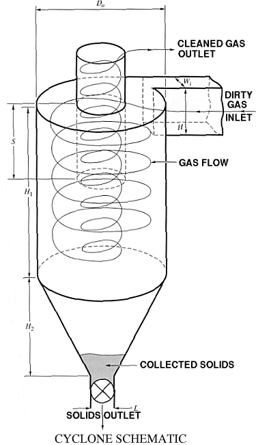
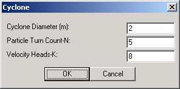
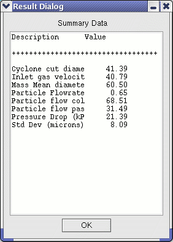

A Cyclone unit eliminates particulate matter from syngas and is usually placed upstream of the gas cleanup system. The Cylcone Module is a 0D model that makes use of engineering correlations to calculate the pressure drop and the particulate removal efficiency as a function of particle diameter. Collected solids from Cyclone units is typically refed to the Gasifier through the particle inlet port (see Gasifier module.) |
 |
|  | Module specifications including Cyclone Diameter, Particle Turn Count and Velocity Heads. |
|  | The summary table entries include properties such as Cyclone Cut Diameter (in microns), the stream's Inlet Gas Velocity (m/s) upon entering the cyclone chamber, the Mass Mean Diameter (microns) of the particles, total Particle Flowrate (kg/s), the percent of the Particle Flow Collected, the percent of the the Particle Flow Passed, the Pressure Drop across the module (kPa), and the Standard Deviation (microns) for the Mean Diameter calculation. |